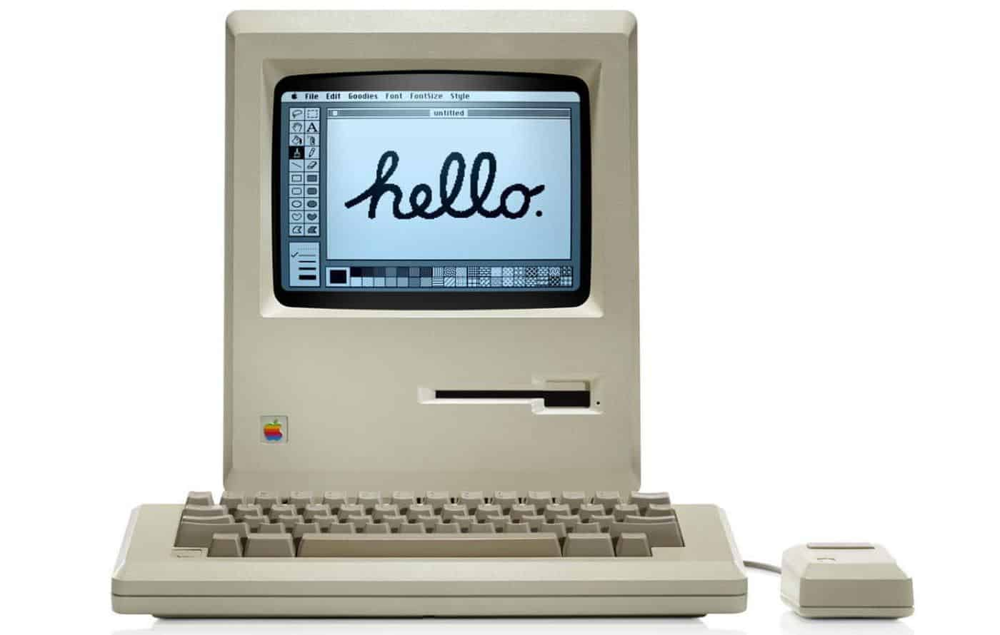

A Máquina Analítica (1837)

"O projeto do primeiro computador de propósito geral."
Já previa entrada, processamento, memória (o "armazém") e saída.
Ada Lovelace: A Primeira Programadora

Ada percebeu algo que Babbage não viu: a máquina não servia apenas para números, mas para qualquer coisa que pudesse ser traduzida em lógica (música, poesia, arte).
Ela escreveu o primeiro algoritmo complexo (para calcular números de Bernoulli).
Interface Gráfica (GUI)

Apple Macintosh
Fechado, Elegante, Caro

Microsoft Windows
Aberto a clones, Pragmático, Popular